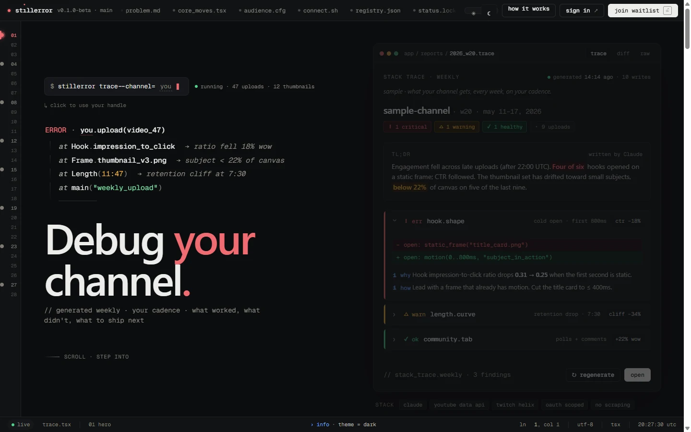

A SaaS that looks like its job.
Stillerror is a debugger for YouTube and Twitch channels: stack traces of what went wrong on the last upload, breakpoints before the next one, pull requests for better titles, weekly patch notes. Both surfaces (the marketing site and the tool) speak the same dialect. Every section reads like an editor pane. Every error reads like a real error.

Studio hands creators charts. Nobody tells them what to ship next.
YouTube Studio is a dashboard. Creators get retention curves, click-through rate by source, audience demographics, browse versus suggested splits. What they don't get is a plain-English read on which upload underperformed, why it underperformed, and what to change before the next one. The data is all there. The diagnosis isn't.
The brief I gave myself was narrow: build the diagnosis layer. Use the vocabulary of the people who'd find it most useful (creators who already think like builders: modders, indie devs streaming, infra people on YouTube). The tool should read like a stack trace. The marketing site should read like the tool.
A landing page committed to one metaphor, all the way through.
Most product marketing reaches for hero + three feature cards + testimonials +
waitlist. Stillerror picks one concept (the IDE) and runs it through every element
on the page. Section names are filenames (trace.tsx,
problem.md, connect.sh, status.lock).
The left gutter is a code gutter with clickable breakpoints. The status bar at
the bottom reads ln 64, col 1 · utf-8 · tsx · 14:23:01 utc. The
Launch section is a literal git conflict-marker primitive (<<<<<<< ours
on one side, >>>>>>> theirs on the other).
- Vite + React 18 + TypeScript, no UI library, no Tailwind, no shadcn
- Self-hosted Geist + Geist Mono with a custom Vite plugin that injects
<link rel="preload">for the hashed woff2 files - Framer Motion for scroll-orchestrated animation, Lenis for smooth scroll, both gated on
prefers-reduced-motion - One live channel-name input in the hero command threads through the stack trace, the closing
main("{handle}_weekly"), the final CTA prompt, and the waitlist receipt - Two themes with a pre-React resolver that runs before the bundle parses, so first paint never flashes the wrong palette
- Honeypot + min-fill-time bot defense on the waitlist; no analytics SDK anywhere
- Built JS: 109.96KB gzipped, under the self-imposed Awwwards perf gate
Seven diagnostic surfaces, all in the same register.
The product behind the marketing site is a Next.js 16 app at
app.stillerror.com with seven routes. Each one reuses a vocabulary
programmers already know, applied to creator data.
- /stack-trace: weekly diagnostic narrative with channel health score, week-over-week changes, and patch notes. One per channel per week, generated on demand from the dashboard
- /breakpoint: pre-upload check. Thumbnail + title + description in, structured go / review / rework verdict out, with predicted click-through rate percentile against the creator's own catalog
- /pull-request: five alternative titles and three alternative descriptions, voice-matched via a cached voice profile
- /heap: niche outlier tracker. Competitor videos that significantly outperformed their own baselines
- /length: Length Sweet Spot. Quadratic regression on retention vs duration, shorts and long-form scored separately
- /release: Release Window. Per-slot scoring of historical first-48h views with Laplace smoothing
- /dashboard: overview, channel cards, sign-in / connect-channel state
Underneath: Drizzle ORM 0.45 against Supabase Postgres, accessed from Workers
through Cloudflare Hyperdrive. Trigger.dev v4 runs ten background tasks
(daily ingestion for YouTube + Twitch, the weekly stack trace, on-demand
generation, competitor scans, voice-profile refresh, token refresh, quota-view
refresh, and so on). Better Auth handles Google OAuth (least-privilege scopes:
yt-analytics.readonly + yt.readonly), Twitch OAuth,
and a separate magic-link admin path. OAuth tokens are stored AES-256-GCM
encrypted at the application layer, separate keys for OAuth versus BYOK.
What I picked, and what I didn't.
-
01
IDE-as-marketing, committed all the way through.
Most SaaS landing pages reach for the same template: hero, three feature cards, testimonials, waitlist. Stillerror picks one concept (it's an IDE) and applies it to every element on the page. Section names are filenames, the gutter has line numbers and clickable breakpoints, the launch section is a literal git conflict-marker, the status bar shows a fake editor cursor position. The product is a debugger for creators. The site reads like the tool it's selling.
Considered: hero + 3 features + testimonials + waitlist (genre default), the same IDE concept but inconsistently committed
-
02
One channel-name input threads the whole page.
The
--channel=___argument in the hero command is a live editable input. Whatever the visitor types flows into the stack trace's namespace, the closingmain("{handle}_weekly")line, the final CTA prompt at the bottom of the page, and the deterministic receipt the waitlist returns after submit. One piece of personalization, plumbed through the entire spine. Pick one moment, over-invest in it.Considered: an untouchable hero mock (the baseline), personalization that dies at the hero (an earlier version had this and broke the spine when the receipt fell back to the email prefix)
-
03
All-Cloudflare, all-Anthropic. No Vercel, no shadcn, no VidIQ.
Marketing is a Vite SPA on Cloudflare Pages. The tool is Next.js 16 on Cloudflare Workers via OpenNext, talking to Supabase Postgres through Hyperdrive. Three Claude models (Sonnet 4.6 for narrative, Opus 4.7 for vision in the Breakpoint Frame Inspector, Haiku 4.5 for utility) all routed through one chokepoint with mandatory prompt caching. The Algorithm Health Score under every weekly stack trace is a deterministic 5-factor composite I wrote, not a number a vendor handed me. Visible cost paid: a WSL-required build step for OpenNext, and a 60-second postgres-js client recycle to defeat Workers isolate-freeze stale-connection hangs. Five commits in a row on that one bug.
Considered: Vercel (deferred then dropped), shadcn (built custom IDE primitives instead: Panel, Severity, Finding, Diff, StatusBar), VidIQ / TubeBuddy as the analytics layer (built the AHS instead)
In cohort beta. The first design partner is already using it weekly.
Stillerror is invite-only right now. The first design partner is Skelly, the same creator from Case 02. Each cohort member generates one stack-trace per channel per week from the dashboard. Every trace is written in creator-literacy register: plain language a creator actually uses, no data-analyst vocab, no bare acronyms.
The marketing site does one job (queue an email) and does it through one Cloudflare Pages Function with a hand-built honeypot and a Resend audience write. No GA, no PostHog, no Plausible. The site that introduces the tool holds itself to the same bar as the tool.